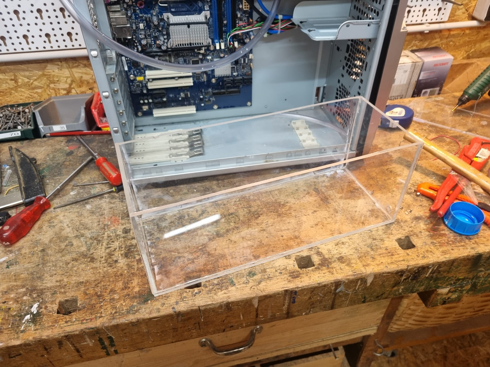

Der Prozess
Vorab:
Das Projekt wurde bei der gesamten Umsetzung von einem Freund begleitet.
Ohne ihn würden wir hier heute nicht stehen. Wir präsentieren: Unser Radio.
Vermessung und Reinigung des PC-Gehäuses:
Vor dem Schneiden der Plexiglasplatte musste das PC-Gehäuse erst ausgemessen werden.
Danach wurden Markierungen auf die Platte gezeichnet. Diese konnten nachher mit der Folie wieder abgezogen werden.
Zurechtschneiden der Plexiglasplatten:
Für das Zurechtschneiden der Plexiglasplatte wurde eine Stichssäge verwendet.


Feilen der Plexiglasplatten:
Beim Sägen der Seitenwände wurde das Plastik so heiß, dass es an manchen Stellen geschmolzen ist.
Diese Stellen mussten abgefeilt und geglättet werden. Dies wurde mit der Handfeile erledigt und danach mit einem Präzisionsstahlwinkel nachgecheckt.
Zusammenkleben der Plexiglaskonstruktion:
Vor dem Kleben wurde noch die Folie der Scheiben abgezogen und geputzt.
Nachdem die Folie abgezogen wurde, konnten alle Glasscheiben zusammengesetzt werden.
Beim Zusammenkleben haben wir regulären Superkleber verwendet. Die geklebten Stellen wurden nacher mit Silikon Acetat abgedichtet.

Das Bewässerungssystem:
Durch das Gehäuse wurden zuvor Löcher gebohrt, welche der Wasserversorgung dienen sollen.
Der Wasserbehälter wurde montiert und die Schläuche verlegt.

Hier wurden mithilfe eines heißen Nagels Löcher in den Bewässerungsschlauch gestochen.